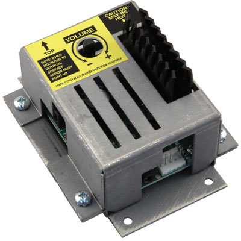

Kiosk Audio Amplifier With Enclosure
Suzo-Happ Part # 49-5140-100
Description:
- Ideal to amplify audio sound for use within a kiosk environment.
- 2 Channel Amplifier.
- Approx. 8 Watts RMS per channel 10% THD (10 Watts RMS @ 16v Input).
- Volume control can be easily adjusted with fingers.
- Compact Size: 4.25" L x 3.38" W x 2.24" H.
- Power Input: +12 VDC to +18 VDC minimum 1.5 A with either a 2 mm Coaxial power jack or .100" center locking header connector (Optional Suzo-Happ plug-in power supply available, part number 80-1153-00).
- Audio Input: 3.5 mm Stereo Jack.
- Audio Output: .100" center locking header connector
